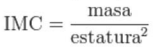

⭐Solicitar ingresos de peso y altura para calcular índice de masa corporal Se asume que el peso se ingresó en kilogramos y la altura en metros.
El índice de masa corporal (IMC) es una medida de asociación entre la masa y la talla de un individuo ideada por el estadístico belga Adolphe Quetelet, por lo que también se conoce como indice de Quetelet. Se calcula según la expresión matemática:

donde la masa se expresa en kilogramos y el cuadrado de la estatura en metros cuadrados.
IMC: